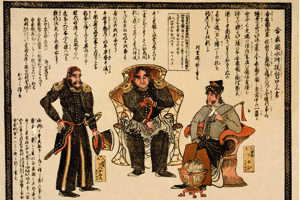
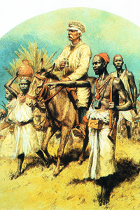
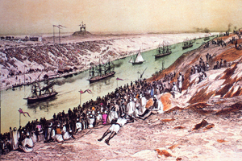
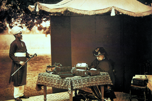

Lezione 17  La corsa alla spartizione del mondo
La corsa alla spartizione del mondo

-
200
810
-
310
480
-
210
520
-
240
650
-
160
815
-
310
510
-
200
770
-
200
460
-
150
480
-

GIAPPONE
La rigida politica di auto isolamento commerciale e culturale dell'impero giapponese viene forzatamente interrotta dal commodoro statunitense Matthew Perry, che nel 1854 conduce al largo delle coste giapponesi una flotta di navi da guerra, le famigerate "quattro navi nere", come vengono chiamate in Giappone.
In questa litografia Perry è rappresentato al centro tra due ufficiali americani, secondo i dettami classici dell'arte nipponica.

CONGO
Il giornalista gallese-americano Henry Morton Stanley viene incaricato dal suo giornale della ricerca dell'esploratore inglese Henry Livingstone, di cui da tempo si sono perse le tracce in Africa.
Stanley ritrova Livingstone vicino al lago Tanganica e si unisce a lui nell'esplorazione delle zone circostanti: è solo uno degli avvenimenti che testimoniano l'interesse delle potenze europee per l'esplorazione di queste zone sconosciute del continente africano.
SUEZ
Nel 1869 l'apertura del canale di Suez permette la navigazione diretta tra Europa ed Asia evitando la lunga e pericolosa circumnavigazione dell'Africa. Quest'illustrazione ottocentesca restituisce bene la portata quasi epica dell'avvenimento.
Ben presto gli inglesi, con l'occupazione dell'Egitto, si assicurano il controllo del passaggio (1882).
INDIA
Sotto il regno della regina Vittoria l'Impero inglese conosce la sua massima prosperità. In questa fotografia del 1893 la regina è intenta a redigere un documento alla presenza di un attendente indiano nella sua residenza di Windsor: nel 1876, infatti, Vittoria era stata incoronata imperatrice d'India.GIAPPONE
Tra il 1853 e il 1873 si ha la modernizzazione del Giappone.
Paese rurale, quasi completamente isolato dal resto del mondo esterno, al punto da vietare i commerci esteri, è investito dall'espansionismo americano. Nel 1853 il commodoro Perry, al comando di una squadra navale americana, ottiene con la forza l'apertura dei porti giapponesi al commercio. Il gesto provoca una forte crisi interna che sfocia in una guerra civile.
Solo nel 1868 avviene il consolidamento del potere imperiale, che guida con ferrea determinazione il paese verso la modernizzazione sociale ed economica, rendendo nel giro di pochi anni il Giappone una potenza economica competitiva a livello mondiale.CONGO
Nel 1874 gli inglesi compiono esplorazioni nella regione del Congo, cui è interessato anche Leopoldo II del Belgio. Nel 1876 il Belgio occupa il Katanga, ricco di giacimenti minerari.ISOLA DI SAKKALIN
La Russia partecipa alle imprese coloniali conquistando le terre cinesi tra il fiume Amur e la Corea. Acquista dal Giappone l'isola di Sakkalin nel 1875. Infine si spinge in Asia (Caucaso e Turkestan).TUNISIA
Nel 1881 la Francia occupa la Tunisia, che diventa un protettorato francese.EUROPA
Uno dei fattori che spiegano la forte spinta espansionistica europea è la forte crescita demografica che si ha nel corso del XIX in Europa. La popolazione passa dai 200 milioni di inizio Ottocento agli oltre 400 dei primi del Novecento.